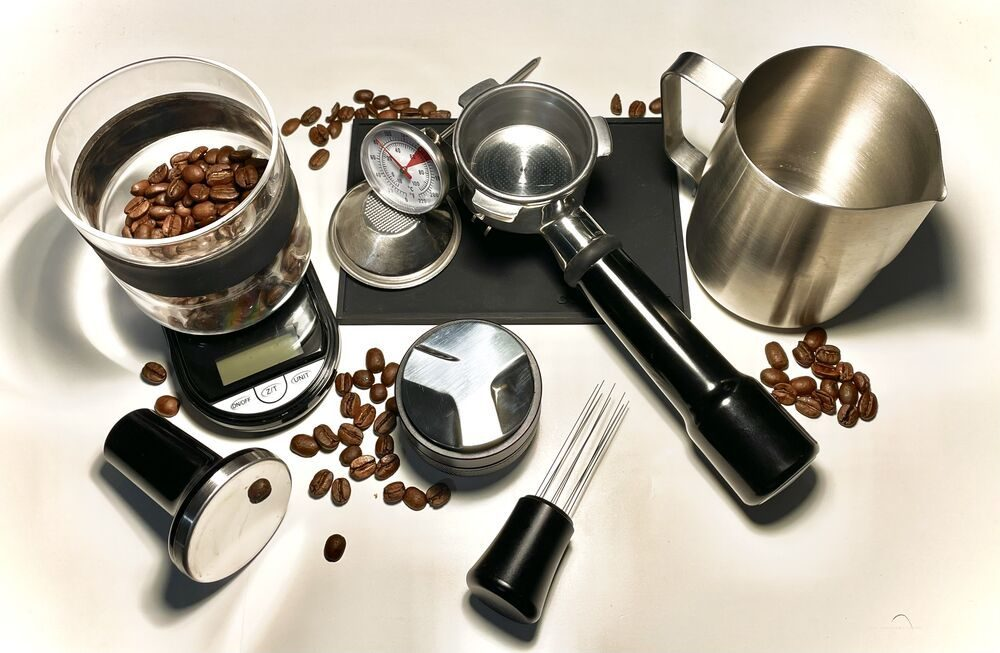

カフェ / 5段の目盛りで見るご案内
GGライダーズカフェGG
「ライダーズカフェGG」のご案内ページです。営業時間やメニューなど、詳しいことは準備中。分かっているのは所在地・電話番号・Instagramです。
「GG」はG二つ、で針は2を指しています(制作側の飾り)
目盛り表
五ページを、1Gから5Gまでの五段に
段の数字は制作側が飾りとして並べたもので、お店の情報ではありません。
制作側の連想
「GG」の二文字から
お店の名前の由来は分かりません。制作側は「GG」という二文字から、加速度の単位として使われる「G」の目盛りを連想し、ページを1Gから5Gまで並べる作りにしました。「制作側の連想で、お店の理念・由来とは無関係」です。写真も、金属や粉・豆などの「かたち」や「質感」で選んだ物のクローズアップで、お店の品ではありません。
積み上がり(イメージ)
三つの質感
